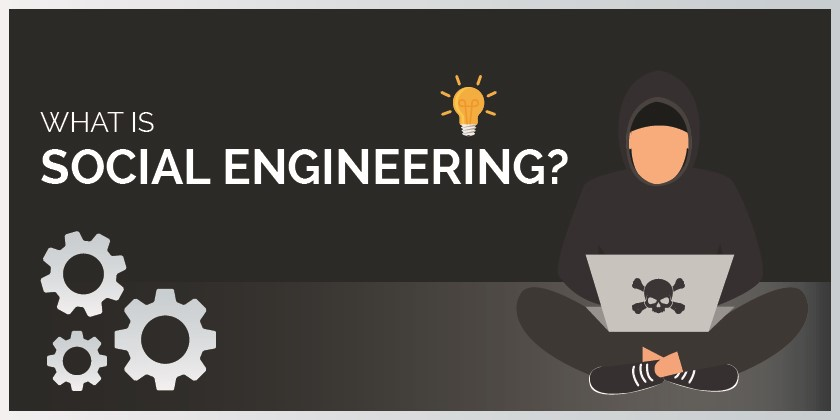
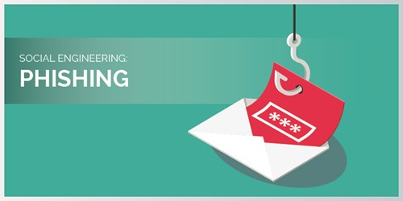

What Is Social Enginneering ?
This article contains:
What is social engineering?
- Social Engineering Defined
- How Does Social Engineering Work?
Types of social engineering attacks
- Phishing
- Vishing
- Smishing
- Spear - Phishing
How to Protect Against Social Engineering Attacks ?
- Be a skeptic. ALWAYS
- Educate yourself
- Update, update, update
- Prioritize
- Keep your professional and private accounts safe
What is social engineering ?
1.Social Engineering Defined
Social engineering attacks usually exploit human psychology and susceptibility to manipulation to trick victims into uncovering sensitive data or breaking security measures that will allow an attacker access to the network. Something that makes social engineering attacks one of the most dangerous types of network threats is the general lack of cybersecurity culture. In an organization, employees are the first line of defense — and they’re all too frequently the weakest link, so much so that all it takes is one employee clicking on a suspicious link to cost the company tens of thousands of dollars. Here’s an example of a social engineering attack: An attacker approaches its target using social media, and gains his/her trust. Putting faith into that trust and confidence, the target forms a relationship with the attacker, who tricks him/her into giving away sensitive information that will allow the attacker access to bank account information. That’s just one example. Now let’s look at all the different types of social engineering attacks one can encounter.
2.How Does Social Engineering Work ?
Almost every type of attack contains some kind of social engineering. The classic email "phishing" and virus scams, for example, are laden with social overtones. Phishing emails attempt to convince users they are in fact from legitimate sources, in the hopes of procuring even a small bit of personal or company data. Emails that contain virus-filled attachments, meanwhile, often purport to be from trusted contacts or offer media content that seems innocuous, such as "funny" or "cute" videos. In some cases, attackers use more simplistic methods of social engineering to gain network or computer access. For example, a hacker might frequent the public food court of a large office building and "shoulder surf" users working on their tablets or laptops. Doing so can result in a large number of passwords and user names, all without sending an email or writing a line of virus code. Some attacks, meanwhile, rely on actual communication between attackers and victims; here, the attacker pressures the user into granting network access under the guise of a serious problem that needs immediate attention. Anger, guilt and sadness are all used in equal measure to convince users their help is needed and they cannot refuse. Finally, it's important to beware of social engineering as a means of confusion. Many employees and consumers don't realize that with only a few pieces of information — name, date of birth or address — hackers can gain access to multiple networks by masquerading as legitimate users to IT support personnel. From there, it's a simple matter to reset passwords and gain almost unlimited access.
Types of social engineering attacks
1.Phishing
Phishing remains the most popular social engineering attack of all due to its high success rate. The majority of all cyber-attacks can be traced back to a phishing email and the online scam works by tricking people into giving out sensitive information or downloading malicious malware. Phishing emails are designed to look genuine and will appear to come from a legitimate source. The email will include a link or attachment which once clicked, will infect a computer with malware.
2.Vishing

Vishing is a combination of the word voice and phishing and refers to phishing scams that take place over the phone. It has the most human interaction of all the social engineering attacks but follows the same pattern of deception. The scammers will often create a sense of urgency to convince the victim to divulge sensitive information. The call will often be made through a spoofed ID, so it looks like it's coming from a trustworthy source. A typical scenario will involve the scammer posing as a bank employee to flag up suspicious behaviour on an account. Once they have gained the victim’s trust they will ask for personal information such as login details, passwords and pin. The details can then be used to empty bank accounts or commit identity fraud.
3.Smishing

Smishing is a type of phishing which uses SMS messages as opposed to emails to target individuals. It is used by criminals to encourage individuals to divulge personal information such as account details, credit card details or usernames and passwords. This method involves the fraudster sending a text message to an individual’s phone number and usually includes a call to action that requires an immediate response. Messages will often claim to be from Banks, Tax Revenue Systems and even your own friends. They may ask you to click a link, call a number or they may even inform you that you are about to receive a phone call from a support member.
4.Spear - Phishing

Spear-Phishing is a more targeted attempt to steal sensitive information and typically focuses on a specific individual or organisation. These types of attacks use personal information that is specific to the individual in order to appear legitimate. The scammers will often turn to social media to research their victims. Once they have a better understanding of their target, they will start to send personalised emails which include links which once clicked will infect a computer with malware.
5 ways to protect yourself from social engineering attacks
Because social engineering exploits basic human behaviour and cognitive biases, it’s hard to give foolproof tips to steer clear of its dangers. It might even take a lot of self-help to stay unharmed through many of these threats. That’s why we’ve compiled a list of 5 ways you can, at the very least, harden your inner and outer defenses against social engineering attacks.
1. Be a skeptic. ALWAYS
Never let anyone tell you that you’re too paranoid when it comes to security. Crackers actually want to exploit your emotions, often leveraging your fear and trust, so you need to be on alert whenever someone attempts such an attack. If you ever sense that someone is asking you questions regarding the topics commonly used as added protection to your accounts, such as your mother’s birth name, your first pet’s name, your birthplace, etc., make sure you really know this person and verify that he or she is truly a person of trust. Should you receive any suspicious emails from a distant relative or a member of your staff, always verify that’s really the person you’re talking to and make sure he or she is authorized, even on a personal level, to ask you for private information as appropriate. It’s never bad to be a skeptic. And when it comes to social engineering, it may be your best bet.
2. Educate yourself
As we mentioned, the lack of cybersecurity culture in many organizations is one of the biggest reasons behind the success of social engineering attacks. For that reason it’s important to train your staff and familiarize them with all these different tactics. Besides your staff, you yourself need to understand social engineering in its many forms. Because social engineering is designed to play with human nature, you as a member of an organization’s staff are also a potential target for cyber criminals.
3. Update, update, update
As we’ve seen, some types of social engineering attackers will try to find any loopholes or security backdoors in your infrastructure. That’s why it’s crucial to keep all of your software up to date. Staying on top of all newly released security patches can help you mitigate plenty of attacks, even if you don’t stick exclusively to those related to social engineering.
4. Prioritize
To really know what to protect, you need to get into the minds of cybercriminals. This will be done most efficiently by having a red team in your line of defense. If you, for some reason, don’t have a red team then you’ll need to work on discovering your most critical assets that are likely to give power to possible attackers. Organizations will often give importance to the information they deem most critical to their financial and commercial gain, but that’s just what the attackers want you to think. This is why you need to rethink what are really the most valuable assets to your organization, those that hold the key to uncovering the depth of your sensitive data and protect it the best you can. 5. Keep your professional and private accounts safe In some of these social engineering attacks, we mentioned that an attacker will conduct extensive OSINT and offline research on your life, behaviour, habits and patterns. For this reason, it’s very important that we keep all of our professional and private accounts safe. It’s not unusual that an attacker will raid our Facebook and LinkedIn profiles to find answers to common security questions, or to examine everyday behaviour. With so many social media platforms in use, it can seem difficult to keep track of all those different passwords — but it’s crucial if we want to stay safe, both online and offline. Use security questions with answers you don’t divulge on any other platforms, employ 2FA and always use the strongest passwords you can think of. And, we know those notebooks specially designed for you to input your passwords may appeal to your “aesthetic” but you really don’t want to keep your safety, and the safety of others, so easily accessible.